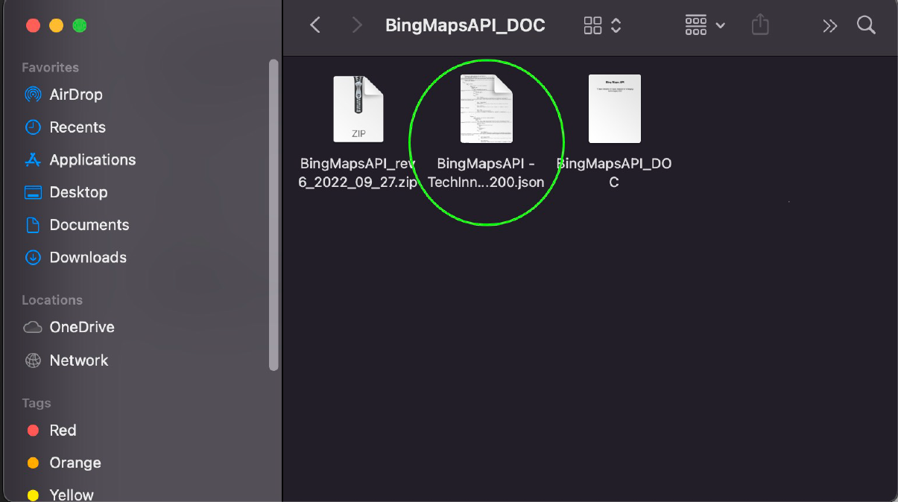

TI team initiative for basic research of emerging technologies 2022
Introduction
This is a reference page on how to use Bing Maps API (basic) REST services. The endpoints are only limited to what may be applicable to projects involved with our team. You may reach out to us via Teams for further questions.
How to get API key
Go to Dev Center and click on My account then My Keys:
Going to my keys to generate or retrieve an API key
To create a new key, click on the link with “Click here to create a new key”. If you
have an existing key, Click on Show key from the list of application names below:
Generate or retrieve an API key
From My keys page, fill out all the required (*) fields and click on Create button to
generate a new API key for your specified application:
Generate a new API key
Project Setup
Unzip BingMapsAPI_DOC file and import BingMapsAPI
-TechInnov.postman_collection_092722-114200 collection to Postman:

How to import collection to Postman
Create a proxy in Apigee (if not yet existing) and/or upload a new revision:
Apigee Proxy: Upload new revision or create new proxy?Upload new revision of proxy (if existing)
Deploy current proxy. Once ready, go to Postman collection and click on collection
name. Make sure variable API_BASE_URL is the same with the deployed URL from
Apigee:
Check API_BASE_URL key value to match with existing Apigee proxy
From Apigee’s proxy Overview page, click on Develop tab then settings.js to change
the API_KEY value. Once Done, save changes and re-deploy:
Going to my keys to generate or retrieve an API key
How to use
* Please see provided Postman Collection to view example responses and read the full documentation for API endpoints applicable for this version.
REST API
Features
Locations
Find a location based on an address, point, or query
Imagery
Get a static map
Get a static map that displays a route
Get imagery metadata
Routes
Find a walking, driving or transit route
Find routes from major routes to a location
Get traffic information along a route
Traffic
Get traffic information for a geographical area
Dynamic Map with Routes (calculate directions)
* Please see provided example to see Bing Maps in action! View the source code for reference.